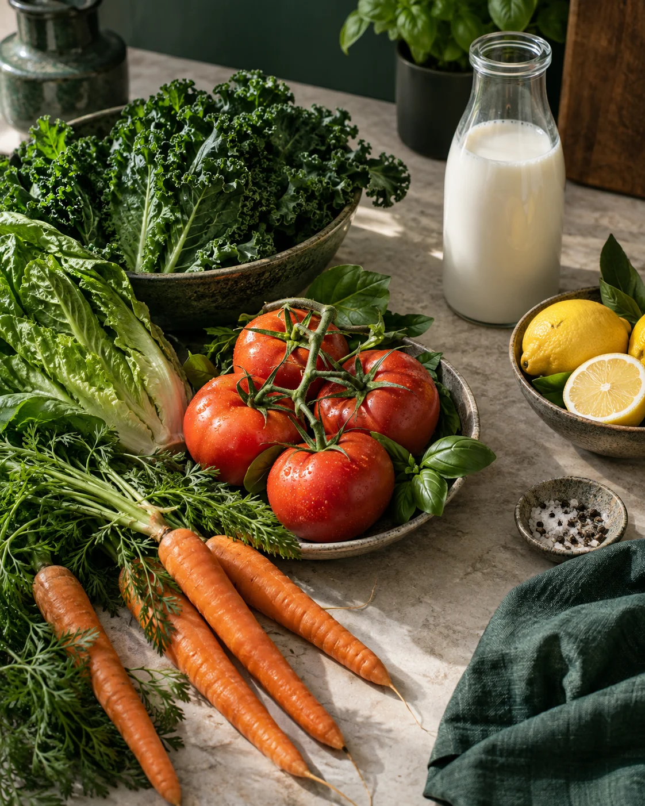

La compra
Un alimento que queríamos consumir.
Tu despensa, bajo control
Una aplicación móvil para organizar los alimentos del hogar y saber cuáles consumir primero.
Tu hogar, organizado

01 / Un problema de todos los días
Una familia compra leche para la semana. El envase queda al fondo del refrigerador y la fecha pasa sin que nadie lo note.
Un alimento que queríamos consumir.
El producto queda fuera de vista.
La fecha pasa y la compra se desaprovecha.
Para quienes organizan las compras semanales o mensuales del hogar.
02 / La propuesta de valor
Conectar lo que hay en casa con lo que conviene consumir primero.
Busca el producto en un catálogo propio.
Registra la fecha de esa unidad o lote.
Consulta los próximos vencimientos y avisos.
Decide qué consumir; las recetas amplían la propuesta.
03 / FrescApp en acción
Registramos la leche, confirmamos su fecha y vemos qué conviene consumir primero.
Demostración simulada04 / Un alcance claro
Las integraciones con supermercados quedan fuera de la primera entrega.
05 / Cómo lo hacemos viable
Interfaz móvil
Captura la acción del usuario y muestra productos y alertas.Catálogo y fechas
Valida el registro y prioriza los productos por fecha confirmada.Cuenta e inventario
Almacena la información según las reglas de acceso configuradas.Flujo de ejemplo: la persona registra un alimento → la aplicación valida los datos → guarda el producto asociado a su cuenta → muestra los vencimientos. La seguridad real depende de configurar y probar las reglas de Firebase.
React Native + Expo permite reutilizar gran parte del código entre Android e iOS y acelerar el prototipo.
Ofrece integración directa con cada plataforma, pero normalmente exige mantener implementaciones separadas. Para un proyecto académico, Expo reduce el esfuerzo inicial; la compatibilidad de módulos y el rendimiento deben probarse.
Registrar un alimento sin ayuda.
Fechas y orden de vencimiento correctos.
Comprobar que cada cuenta acceda solo a sus datos.
06 / Modelo de negocio
Free permite comenzar; Plus elimina anuncios y permite compartir; Premium amplía la gestión familiar.
Precios propuestos en CLP para validar con usuarios; no son tarifas comerciales definitivas. Los límites incluyen al titular de la cuenta.
07 / Costos para operar
Estimaciones orientativas para Chile. El gasto real depende del uso, las tarifas vigentes y cuánto trabajo haga el equipo.
Firebase / Cloud Firestore, autenticación, almacenamiento, funciones y tráfico.
Google Play Console: US$25 una sola vez. Apple Developer Program: US$99 al año.
Dominio propio, correo de soporte y página informativa o política de privacidad.
Corrección de errores, actualizaciones, pruebas, copias de seguridad y revisión de accesos.
Promoción en redes, contenido, pruebas de anuncios y material de lanzamiento.
Comisiones de cobro, asesoría contable/legal, privacidad, soporte y herramientas de desarrollo.
También conviene presupuestar términos de uso, privacidad, monitoreo de errores y soporte. La inversión para desarrollar o mejorar la app se calcula por separado.
Valores estimativos en CLP salvo cuando se indica USD. No son cotizaciones. Firebase no tiene una tarifa fija universal: revisar el consumo real y configurar alertas de presupuesto antes del lanzamiento.
08 / FrescApp
Proponemos validar una primera versión que permita
registrar alimentos y decidir qué consumir primero.
Base consultada: estudio piloto de hogares en Santiago (2021) y requisitos de diseño del proyecto.